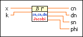
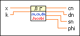
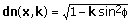
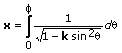
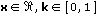

Jacobian Elliptic Functions VI
Owning Palette: Elliptic & Parabolic Functions VIs
Requires: Full Development System
Determines the Jacobian elliptic functions cn, dn, and sn.

 Add to the block diagram Add to the block diagram |
 Find on the palette Find on the palette |
Owning Palette: Elliptic & Parabolic Functions VIs
Requires: Full Development System
Determines the Jacobian elliptic functions cn, dn, and sn.

| Add to the block diagram |
Find on the palette |
The following equations define the three Jacobian elliptic functions.
cn(x, k) = cos( )
)
sn(x, k) = sin()

where

The function is defined according to the following intervals for the input values.

For any real value of integrand parameter k in the unit interval, the function is defined for all real values of x.